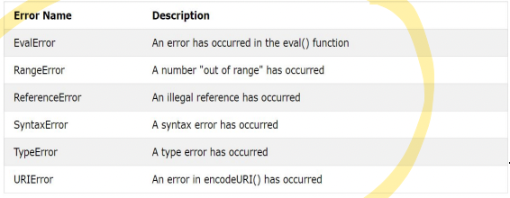
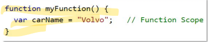
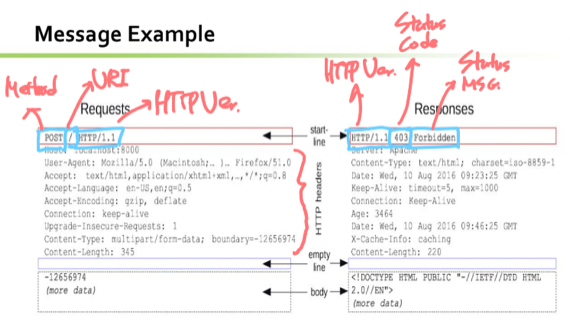

충남대학교 컴퓨터공학과 이규철 교수님의 "웹 프로그래밍" 강의를 필기한 내용입니다.
다소 잘못된 내용과 구어적 표현 이 포함되어 있을 수 있습니다.
JS 짜투리
JS Errors

- Error 객체의 name property에 다음과 같은 값들이 들어갈 수 있댄다
JS Scope
Function Scope

- var을 쓴다고 무조건 Global scope가 되는건 아닌가봄 - 함수 안에 var을 적으면 Function scope가 된다
“Use Strict”
- 매번 이거 볼때마다 뭔가 했는데
- 원래는 선언 없이 변수에 값을 할당하면 자동으로 Global 변수로 선언되었는데
- Use Strict를 사용하면 선언 없이 변수에 값을 할당하면 자동으로 Global 변수로 선언되는 것을 막는다
Global
- 뭐 당연한거지만 Global 변수는 window객체에 종속된다
- 그리고 Global 변수는 브라우저 윈도우(탭)이 켜져있는동안 라이프타임이 지속된다
HTML 짜투리
<canvas> 태그, svg
<canvas>태그를 이용해 공간을 마련하고 JS를 이용해 여기다가 선을 긋는게 가능하댄다- 뭐 메소드가 다 준비되있대
- 그리고 svg는 Scalable Vector Graphic으로 벡터그래픽을 XML형식으로 표현한 문서이다
- 따라서 SVG DOM이 구성되어있고 HTML DOM에 Mount된 이후에는 DOM객체로 조작할수도 있댄다
- canvas와 svg의 차이점은
- canvas는 JS로 그리고 변경되어도 바로바로 반응하지 않지만
- svg는 XML형식으로 그리고 변경되었을때 바로바로 화면에 랜더링된댄다
Video, Audio
- HTML에서는
- 비디오는 mp4, webm, ogg만 지원하고
- 오디오는 mp3, wav, ogg만 지원한댄다
<video>와<audio>태그는 사용법이 거의 동일함- 태그에다가
controlsAttribute를 넣으면 뭐 재생 / 중단 등의 컨트롤 패널이 사용자에게 보여짐 - 태그 안에다가
<source>를 넣어서 보여줄 콘텐츠를 지정할 수 있고 위에서부터 실행하여 가져올 수 있는 첫번째 콘텐츠를 보여줌 - 태그 사이에 텍스트를 넣으면 어떠한 콘텐츠도 로딩되지 않았을 때 이 텍스트가 대체로 보여진다
autoplay속성으로 자동재생을 지정할 수 있고muted로 기본값을 음소거로 할 수 있는데- Chrome에서는 자동재생을 음소거시에만 허용한댄다
- 태그에다가
Object, Embed
<object>나<embed>로 임의의 컨텐츠를 화면에 뿌릴 수 있댄다- 뭐 오디오, HTML이런거 말고도 PDF Reader플러그인같은것들도 이걸 이용한댄다
Youtube
- 알다시피 URL의 ID로 비디오를 지정하고
mute=1로 음소거autoplay=1로 자동재생controls=0로 컨트롤 패널 출력하지 않기loop=1로 반복재생이 가능하댄다
HTTP
- HyperText Transfer Protocol
- TCP / IP를 이용해서 HTML과 그와 관련된 것을 송수신함
중요한 속성들
- Connectionless : 클라이언트가 서버에게 요청하고 받은 뒤에는 TCP / IP연결을 끊음
- 즉, 요청 할때마다 새로 Three Handshake를 해야 한다
- 이것은 서버사이드에 부담을 줄여주긴 하지만 매번 통신을 연결해야 하기 때문에 시간이 지연된다는 단점이 있다
- Media Independent : 데이터의 처리 방법만 content-type으로 명시하면 어떠한 것이든 송수신할 수 있음
- Stateless : 서버는 클라이언트의 현재 상태를 저장하지 않음 - 요청을 보낼때마다 문맥을 알려줘야 한다
Message Format

- 일단 Start line, Header, empty line, Body로 구성됨
- 뭐 Start line이 나오고 Header가 나온 뒤에 한칸의 개행을 두고 Body가 등장하는 형태
- Header에는 여러가지 header들이 들어가게 되는데 뭐가 들어가는지는 필요할때마다 찾아보고
- Body에는 실질적인 내용이 들어가게 되는데
- Start line은 요청과 응답에 형식이 지정되어 있다
- 일단 요청에는 METHOD URI HTTPver이런식으로 명시되고
- 응답에는 HTTPver StatusCode StatusMSG 이러한 형태로 제시된다